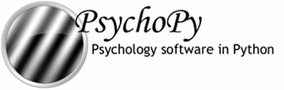

|  |

|
Note that PsychoJS is very much under development and all parts of the API are subject to change
Some people may want to write a JS script from scratch or convert their PsychoPy Python script into PsychoJS.
The PsychoJS library looks much like its PsychoPy (Python) equivalent; it has classes like Window and ImageStim and these have the same attributes. So, from that aspect, things are relatively similar and if you already know your way around a PsychoPy script then reading and tweaking the PsychoJS script should be fairly intuitive.
Obviously there are some syntax changes that you’d need to understand and convert (e.g. JavaScript requires semi-colons between lines and uses {} to indicate code blocks). There are some tools like Jiphy that can help with this. The problem is that the conversion is not as simple as a line-by-line conversion
There are a few key differences that you need to understand moving from Python code to the equivalent PsychoJS script.
A Python script runs essentially in sequence; when one line of code is called the script waits for that line to finish and then the next lines begins. JavaScript is designed to be asynchronous; all parts of your web page should load at once.
As a result, PsychoJS needed something to control the running order of the different parts of the script (e.g. the trials need to occur one after the other, waiting for the previous one to finish). To do this PsychoJS adds the concept of the Scheduler. For instance, you could think of the Flow in PsychoPy as being a Schedule with various items being added to it. Some of those items, such as trial loops also schedule further events (the individual trials to be run) and these can even be nested: the Flow could schedule some blocks, which could schedule a trials loop, which would schedule each individual trial.
If you export a script from one of your Builder experiments you can examine this to see how it works.
Some people will be delighted to see that in PsychoJS scripts output by Builder there are functions specifying what should happen at different parts of the experiment (a function to begin the Routine, a function for each frame of the Routine etc.). The essence of the PsychoJS script is that you have any number of these functions and then add them to your scheduler to control the flow of the experiment.
In fact, many experienced programmers might feel that this is the “right” thing to do and that we should change the structure of the Python scripts to match this. The key difference that makes it easy in the JavaScript, but not in the Python version, is that variables in JS are inherently global. When a stimulus is created during the Routine’s initialization function it will still be visible to the each-frame function. In the PsychoPy Python script we would have to use an awful lot of global statements and users would probably have a lot of confusing problems. So, no, we aren’t about to change it unless you have a good solution to that issue.